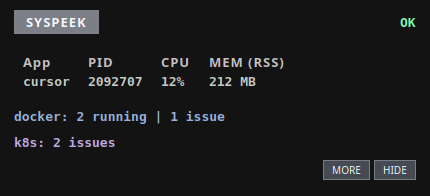

Focused application
The window you're using right now — its PID, CPU percentage, and resident memory — updated live.
Linux · C++20 · Qt 6
No more hunting through top. Syspeek follows the window you're using
and shows that application's CPU and memory plus optional Docker and
Kubernetes health in a compact panel that stays out of your way.
$ curl -fsSL https://raw.githubusercontent.com/codeafridi/Syspeek/main/install.sh | sh
Self-contained build — Qt is bundled, so there's no compiler or Qt to install. Starts at login. Needs x86-64 and glibc ≥ 2.34. Prefer no terminal? Grab the AppImage.

What it shows
The window you're using right now — its PID, CPU percentage, and resident memory — updated live.
Running container count, plus flags for unhealthy, restarting, and recently exited containers.
Problem pods (CrashLoopBackOff, image-pull failures, OOMKilled) and deployments with too few ready replicas, from your current kubectl context.
GNOME, KDE, Sway, niri, and X11 out of the box; other Wayland compositors run fine and simply show no-focus.
Both integrations are optional and run off the UI thread, so a missing tool never blocks the overlay.
Compatibility
Built and tested on Ubuntu, Debian, Fedora, RHEL 9 clones, openSUSE, Arch, and Alpine. The installer ships Qt 6 with the app, so it also runs on distros that don't package Qt 6 like openSUSE Leap, Amazon Linux 2023, and similar.
syspeek stop, syspeek disable, syspeek update, syspeek uninstall.Get started
One line. Adds a syspeek command, starts at login, and sets up the focus bridge.
$ curl -fsSL https://raw.githubusercontent.com/codeafridi/Syspeek/main/install.sh | sh
Native package. Installs /usr/bin/syspeek, a user unit, and a launcher.
$ sudo apt install ./syspeek_0.3.2_amd64.deb
Grab the .deb + SHA256SUMS from the latest release, verify with sha256sum -c SHA256SUMS --ignore-missing.
One file, no install step. Download it, make it executable, run it. Self-updates via delta (.zsync on the release page, use AppImageUpdate).
$ curl -fLO https://github.com/codeafridi/Syspeek/releases/latest/download/Syspeek-0.3.2-x86_64.AppImage && chmod +x Syspeek-0.3.2-x86_64.AppImage && ./Syspeek-0.3.2-x86_64.AppImage
Docs, build notes, and source live in the GitHub repository.